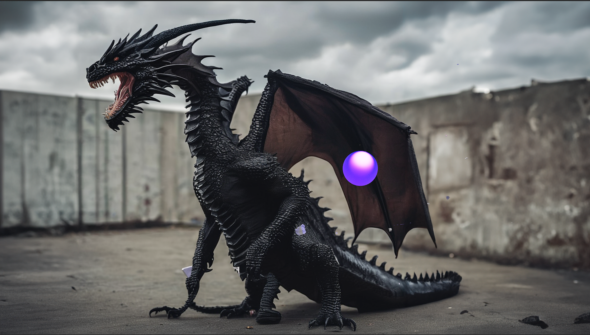

18:19 min. — 4 × 55″ screens, 222 cm × 260 cm — found footage, self-made 3D animations, AI-generated images
Part of an installation
The title references the worn-out fairy tale of the shining knight who slays the evil dragon to achieve glory and honor: the triumph of good and beauty over evil and ugliness. It also evokes the imagery of Archangel Michael casting the dragon out of heaven. White supremacist ideology often relies on misinterpretations of the Bible: the creation of the white man in God's image and the mandate to subdue the earth. In contrast, the dragon represents the wretched of the earth, the untamed vastness and force of nature, and the feeling of being small and impotent that arises when faced with her might. From this sense of impotence arises the desire for superiority and the will to dominate everything that embodies the dragon. To subjugate the infinitely complex nature of life, the subjugator must reduce its complexity and diminish its vitality. As the knight charges at the dragon, lance aimed at her chest, the dragon, ancient beyond measure, hums an age-old melody. She knows full well that the frightened little man in his shiny armor is just a tiny part of herself, part of the eternal cycle of fragmentation, assembly, and emergence.

18 min. — found footage and self-made 3D animations
With a view on global connections and informatic achievements, the essay film points out similarities of man-made systems and natural structures, that become more evident with the advance of global connectivity. In found footage images combined with self-made 3D animations, an artificial voice-over raises a question: would the demise of hardened centralised power structures through modern technologies mean our salvation?